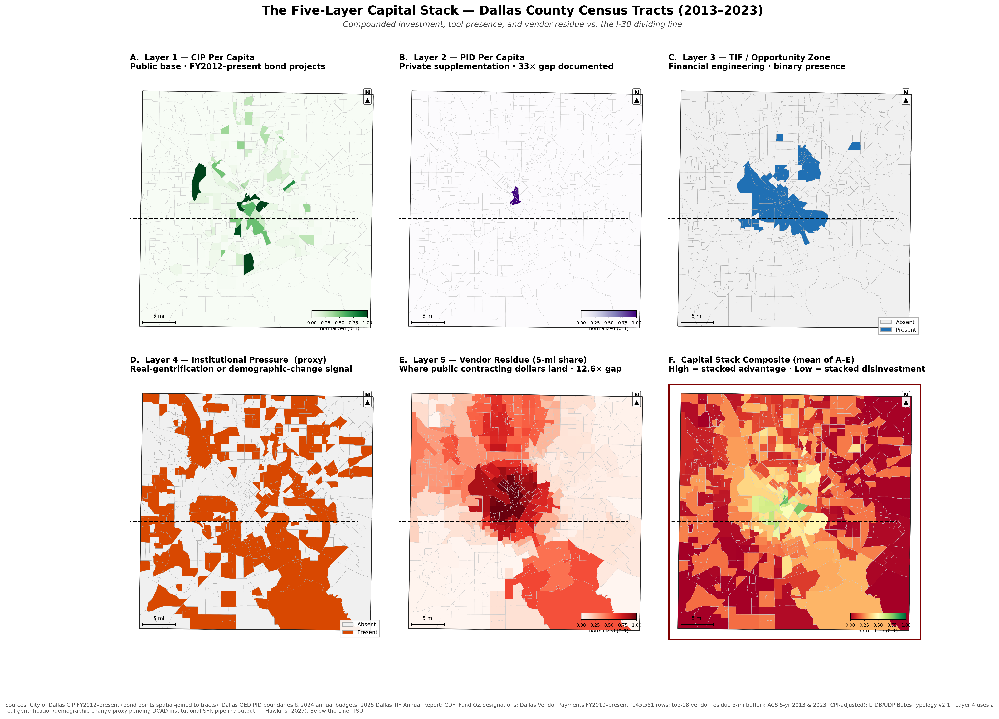
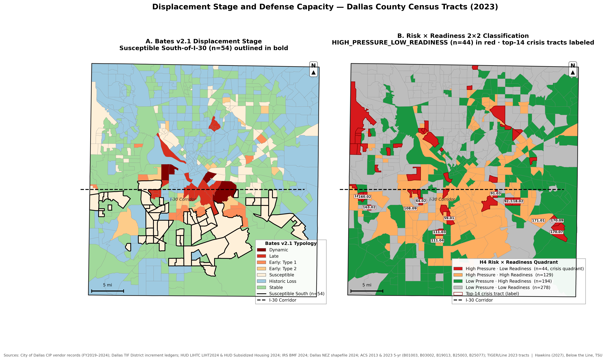
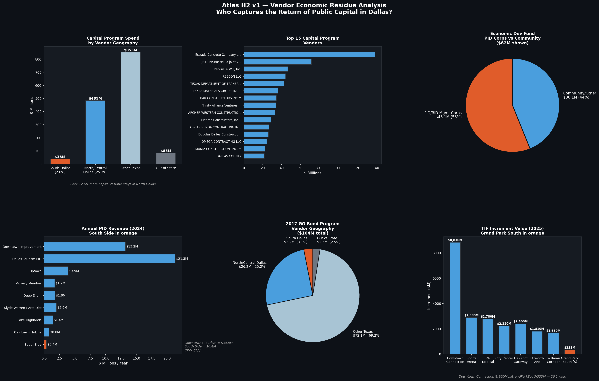

Displacement Defense Atlas · Scroll-driven edition
Development as Governance and the Geography of Displacement Risk in Dallas
Begin reading ↓The redlining map was never just descriptive. HOLC grades governed where mortgage capital could and could not flow for the next three decades, and the lines became infrastructure — bus routes, highways, sewer lines, school catchments.
When Dallas's Capital Improvement Program allocates bond dollars today, the geography it inherits is this one. The thesis begins here because the argument is cumulative: each subsequent layer of investment decision is shaped by what the previous layer did and did not leave behind.
“HOLC-D grade β = +247.6, p<0.001 — after controlling for HOLC grade, the race coefficient becomes statistically insignificant.” — H1 M7 OLS, reproducing Aaronson, Hartley & Mazumder (2021)
The Capital Improvement Program is the public base of the Five-Layer Capital Stack — Layer 1. It is the most legible, most accountable, and most directly attributable layer of public spending. And it is where the inherited pattern from Chapter 1 first gets amplified rather than corrected.
The V4 version of this thesis asked who lives near a CIP road project. The V5 reframe asks a different question: who captures the economic returns of that public dollar? Chapter 6 answers it. For now, Chapter 2 establishes the allocation baseline.
TIF and OZ are not neutral tools. They redirect future public tax revenues and federal capital-gains incentives to specific geographies chosen by specific people. Weber (2002) is the canonical citation: the “but for” standard that authorizes TIF districts is political, not empirical.
The consequence, in Dallas: public-finance scaffolding concentrates where exchange value is already high, and is absent where displacement pressure is rising fastest. Chapter 4 shows how every layer of this stack compounds the pattern.

capital_stack_score (mean of A–E, normalized 0–1). Green = stacked advantage; red = stacked disinvestment. The advantaged zone is a small downtown/central cluster; the rest of the county is various shades of red. Source: Hawkins (2026), `atlas_v0_map_d_capital_stack.py`.
Each layer has been studied before, though rarely in Dallas and almost never together. The thesis contribution is the demonstration that the layers are not independent: their joint presence amplifies exchange value in wealthy white communities; their joint absence compounds disinvestment in Black and Hispanic communities south of I-30.
The composite is computed at the tract level. Each layer is min-max normalized to 0–1 (continuous layers winsorized at the 99th percentile). Tracts where all five layers are present score near 1.0 (saturated green); tracts where all five are absent score near 0.0 (deep red).
“This is not market failure. It is governance design.” — Chapter 6 closing argument

Panel A shows where displacement is in its cycle. Dynamic and Late stages cluster in the central arc north of I-30 where the process is nearest completion. Susceptible stage concentrates south of I-30 — the next front. Historic Loss dominates North Dallas (42% of tracts); the cycle there has already resolved.
Panel B shows which of those places have anything standing between residents and loss. Readiness is the composite of LIHTC / HUD-assisted unit density, tenant-org and CDC presence, and NEZ coverage. Panels laid side by side: the 44 HP/LR tracts and the 14-tract crisis list are the thesis intervention target.

Vendor residue is Layer 5 — the layer V4 could not see. Public capital enters a geography as a CIP project and exits it as a vendor payment. The question is whose balance sheet the exit lands on. In Dallas, overwhelmingly, it lands on a firm headquartered north of I-30.
H5 adds the political-recirculation loop: zero direct corporate contributions from the top-18 vendors to Dallas City Council races, but active contribution patterns at state and federal levels, and one documented board interlock (Texas State Rep Tan Parker on the Southland Holdings board — parent of Oscar Renda Contracting, $26.5M in active Dallas contracts). The race-neutral surface of municipal procurement is preserved while the extractive circuit operates in the jurisdictions above it.
“OLS: south_of_i30 β = −0.1423 (p = 0.0003). South Dallas tracts capture significantly less vendor economic residue.” — H2 regression, `h2_vendor_residue_by_tract.csv`
| Council District | Tracts | Member |
|---|---|---|
| District 8 | 14 | Atkins |
| District 3 | 14 | Gracey |
| Outside City of Dallas | 14 | (Balch Springs, Hutchins, Seagoville) |
| District 5 | 5 | Resendez |
| District 4 | 4 | Schultz |
| District 1 | 3 | — |
| Rank | Tract | GEOID | Council |
|---|---|---|---|
| 1 | 170.09 | 48113017009 | District 8 |
| 2 | 64.02 | 48113006402 | District 1 |
| 3 | 91.03 | 48113009103 | District 5 |
| 4 | 170.07 | 48113017007 | District 8 |
| 5 | 92.02 | 48113009202 | District 5 |
“H6 showed where displacement pressure is arriving. H4 shows what's there to absorb it — and for the most urgent 14 tracts, the answer is essentially nothing.”